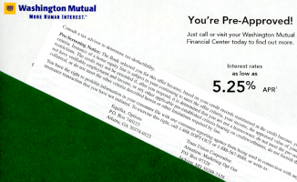

|
|
Opt-Out Prescreen Website. I had a great experience with junk postal mail the other day. I received yet another pre-approved offering in the daily mail and before I put the identifying information through the household shredder on the way to the recycle tub, I noticed an unusual insert along with the letter.
Something peculiar this way comes. Most of the offers that come my way have all of the fine print and terms and conditions on the back of the stub that would be mailed in, though I don't bother reading them any more. But this mailing had a distinctive, normal-sized-text printed insert. The insert provided details of the offer, explaining that it was based on pre-screening of my credit records. I could end up being ineligible for the home equity loan that was proposed to me (and I am indeed ineligible as well as not in need of the service). It was impressive that they made the situation so clear.

"You have the right to prohibit information in your consumer file with any consumer reporting agency from being used in connection with any financial or insurance transaction that you have not initiated. To exercise this right, call ... ."
I set the material aside, resolved to call the +1-888-567-8688 number at my earliest opportunity. When I did that, I had an interesting experience with a well-behaved voice-recognition system. At one point, the voice response asked me a question and then was silent. I paused and considered for a moment, and then said "Yes." The system caught it at once and continued through the questions and requests for information. I don't know what would have happened if I'd out-waited the system, but I'll wager that it would advise me to press some keys.
I was also given the web-site URL a few times, though the voice-recognition system worked well enough for me. I've since visited the web site and I like how straightforward the entrance page is. My entire experience was very positive. I bet yours will be too.
Vicki and I have been watching the mail and looking for anything with other pre-approved offers that explains our right to opt-out. So far, nary one other opt-out among the daily pre-approved arrivals.
This experience is a remarkable contrast with having someone I didn't know at my current branch bank cold-call me and tell me over the phone that they'd noticed I was carrying a high balance on my checking account, suggesting that I move some into an interest-bearing checking account. When I backtracked the call and confirmed that it was from an unlisted extension at my branch bank, I found them to be clueless why I was disturbed by that call. It makes me wonder why I'm not doing business at the place where the folks seem more-thoughtful about my concerns and I don't even bank there. If I get to a point where I need to make some changes anyhow, I have a good candidate for a different bank.
A few years ago I subscribed to one of the reporting services that would provide alerts about actions against my credit report. It seemed like a good idea except for two things. First, the reports came long after the activity, so any damaging actions would have long since been completed. Secondly, all of the activity was basically fishing by financial institutions and insurance companies probing for people who met their pre-approval conditions. So I abandoned that service.
I did learn that my credit history never dies. There were organizations that had me listed as an account holder in good standing years after I no longer had any relationship with them. I don't like the idea that those inactive accounts might somehow be accessed by someone, but I mostly just forget about it.
In the two cases where there was something odd in my credit situation, knowing it was pretty useless. When I sold my Sunnyvale, California, condominium, I learned there was a lien against the property placed there by the District Attorney of San Jose. That was startling for me, but not for the title company. I was told that judgments against people who've skip out get placed on the nearest approximately-credible alternative. It was simple to file an affidavit asserting that I wasn't the person the judgment was against, and that was the end of it. This did not increase my confidence in our civil authorities, however.
When I applied to rent a house in the Puget Sound area a few years later, the rental agent said there was a bad-debt claim on my credit report from TCI Cablevision (referring to a period of time when I was a good customer and continued to be one for a few years beyond that). The rental agent was not disturbed about it at all. I did call ATT Cablevision as TCI had become by then. The person I reached insisted that I had to know which location of TCI placed the claim and they could do nothing otherwise. When I said there was no such information on the report (but the number that I called was on the report), she argued with me about it and was completely unhelpful. Since this didn't seem to impact my creditworthiness whatsoever, I let it go and subsequently delighted in telling all ATT Cablevision and Com-Cast folks who cold-called me (before the national do-not-call list was created) that I don't own a television (true) and that I am quite happy with the DSL service I receive from the telephone switching center 2 blocks from my home (also true).
|
|
You are navigating Orcmid's Lair |
created 2005-03-29-21:41 -0800 (pst) by
orcmid |